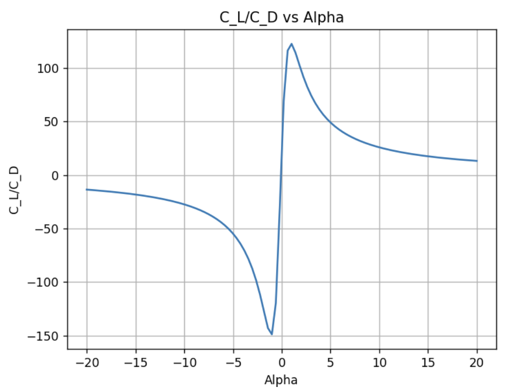
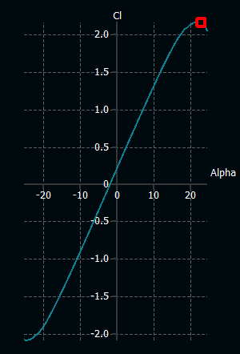
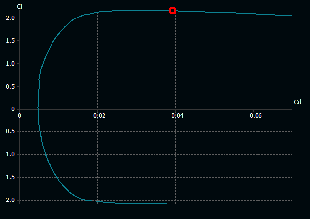

Analysis of Boeing 747-800’s Aerodynamics Using First Principles
A Brief Synopsis
Under this project, the aerodynamic features such as lift and drag coefficients, downwash effects, and viscous models are determined using first principles. To begin, the coordinates of the BACXXX airfoil are derived from airfoil tools. Following this, 2D method of thin airfoil theory is used to get the section lift coefficient. Since the 2D models assume inviscid flow, no drag can be determined from them. Accordingly, the finite wing of the Boeing 747 is analysed using Finite Wing Theory and Prandtl Lifting Line Theory to understand the downwash effects and induced drag. Viscous models are added on top of this to improve the accuracy of the calculations and finally a study in XFLR5 is conducted. For the fundamental analysis, python code is written from scratch which can be found here.
1. Thin Airfoil Theory
Thin airfoil theory assumes that the airfoil has a small thickness compared to its chord length (<12%). This allows the airflow over the airfoil to be treated as two-dimensional, simplifying the analysis. Since the theory utilizes potential flow theory, it assumes the flow to be irrotational and inviscid. Moreover, the theory assumes a vortex sheet on the camber line which creates circulation and consequently lift, as explained by the Kutta Joukowski theorem.
\[\begin{equation} L' = \rho V_\text{inf} \Gamma \label{eq:kutta} \end{equation}\]
According to thin airfoil theory, the lift force and moments applied to a 2D airfoil can be determined using the change in camber line where \(\sigma\) is the vorticity strength over the camber line. In order to determine the camber line function of the BACXXX airfoil, 4 digit NACA convention is used where ‘m’ = maximum camber and ‘p’ = location of maximum camber.
\[\begin{equation} \frac{1}{2\pi}\int_{0}^{c} \frac{\sigma(x_0)}{(x-x_0)} \, dx_0 = V_\text{inf} (\sin(\alpha) -\frac{dz}{dx} \cos(\alpha) \label{eq:thin airfoil} \end{equation}\]
\[\begin{align} \label{eq:camberline} yc = \frac{m}{p^2}(2px-x^2), 0 \leq x \leq p.\\ yc = \frac{m}{(1-p)^2}((1+2p)+2px-x^2), p \leq x \leq 1 \end{align}\]
In order to integrate the vorticity strength function around the chord, Fourier coefficients are used to express the vorticity strength function as a \(f(\theta)\) as . The fourier coefficients are labelled as \(A_n\) and are determined using equations.
\[\begin{equation} \sigma(\theta) = 2V_\text{inf}(A_0 \frac{1+\cos(\theta)}{\sin(\theta)} + \sum_{i=1}^{n}A_n \sin(n\theta)) \label{eq:fourier thin} \end{equation}\]
\[\begin{align} \label{eq:fourier} A_0 = \alpha - \int_{0}^{\pi} \frac{dz}{dx}d\phi\\ A_n = \frac{2}{\pi}\int_{0}^{\pi}\frac{dz}{dx}(cos(n\phi)d\phi) \end{align}\]
The coefficients are solved for cruise speed and the coefficient of lift and moment at the tip are determined as shown in . The slope of the lift coefficient vs angle of attack is determined to be 6.28 which is approximately \(2\pi\) and the angle of attack at \(C_L\) = 0 is -1.31 . At cruise speed, the angel of attack is determined to be 0.5 degrees to generate lift force equaling the maximum payload of the aircraft.
2. Finite Wing Theory
Since thin airfoil theory assumes a 2D profile and an infinite wing, it neglects effect of downwash. Downwash is the movement of the air from high pressure region underneath the wing to low pressure region top. Accordingly, there is no lift produced at the edges which results in a non-uniform vorticity distribution unlike the thin airfoil theory. To solve this problem, a parabolic distribution of vortex strength is considered which is 0 at the ends and peaks in the middle. The effect of downwash reduces the angle of attack.
\[\begin{equation} \label{eq:aoa effective} \alpha_\text{effective} = \alpha - \alpha_\text{induced} \end{equation}\]
It was determined that the lift coefficient varies with angle of attack using the factor \(2\pi\). The magnitude of downwash. Putting this in context with the vorticity distrubtion function like before, the fundamental equation of finite wing theory is derived.
\[\begin{equation} \label{Eq:downwash} w(y_0) = \int_{-winspan/2}^{wingspan/2}\frac{\frac{d\Gamma}{dy}}{4\pi(y-y_0)} dy \end{equation}\]
\[\begin{equation} \label{eq:finite main} \frac{\Gamma(y_0)}{\pi V_\text{inf} c(y_0} = \alpha(y_0) - \alpha_\text{L-0}(y_0) + \frac{1}{4\pi V_\text{inf}}\int_{-wingspan/2}^{wingspan/2}\frac{\frac{d\Gamma}{dy}}{4\pi(y-y_0)} dy \end{equation}\]
To solve the equation, the vorticity strength across the wing is assumed to be Fourier sum. The Fourier coefficients \(A_n\) are solved using linear system of equations: Ax = B. Using these coefficients, the lift and induced drag are determined.
\[\begin{equation} \label{eq:finite fourier} \Gamma(\theta) = 2bV_\text{inf}\sum_{i=1}^{n} A_n sin(n\theta) \end{equation}\]
\[\begin{equation} \label{eq:finite fourier main} \frac{2b}{\pi c(\theta)}\sum_{i=1}^{n} A_n sin(n\theta) + \sum_{i=1}^{n} nA_n \frac{sin(n\theta)}{sin(\theta)} = \alpha(\theta) - \alpha_\text{L-0}(\theta). \end{equation}\]
\[\begin{align} \label{eq:finite lift} C_L = A_1 \pi (Aspect Ratio)\\ C_D = \frac{C_L^2}{\pi(Aspect Ratio)}(1+\sigma) \end{align}\]
The linear system of equations is solved in Python using 100 coefficients to generate precise values. The corresponding Reynolds number for this analysis is 2.4e8. The lift coefficient, induced drag coefficient, and the relations of the two. The modified lift coefficient, accounting for induced drag, has less slope than the 2D model which makes sense because the lift force is not uniform anymore. In other words, the downwash results in loss of lift force at the edges which introduces an induced angle of attack.

3. Viscous Modelling
Viscous effects in aerodynamics arise from skin friction due to boundary layers. Assuming no slip condition, the flow has 0 velocity at the contact surface which induces shear stress and gives rise to drag. Boundary layers can be classified as laminar and turbulent, based on the local Reynolds number. If the Reynolds number is greater than 3e5, critical Reynolds Number, the flow is considered to be turbulent.
The determination of skin drag on the wings of Boeing 747-800 is done using strip theory: the wing is split into multiple sections. Both laminar and turbulent effects are considered while analyzing individual strips and the shear force is determined. To make things easy, flat plate model is used to determine the drag force.
\[\begin{align} \label{eq:drag} Drag_\text{Laminar} = 0.664 \rho V_\text{inf}^2 L (Re_L)^.5\\ Drag_\text{Turbulent} = \frac{0.036 \rho V_\text{inf}^2 L}{Re^.2} \end{align}\] Since the incoming flow transitions from laminar to turbulent, the total drag on the section is determined using Prandtl Relation. The Reynolds number used for the transition is 3e5
\[\begin{equation} \label{eq:prandtl} Drag_\text{Total} = Drag_\text{100\% Turbulent} - Drag_\text{Turbulent Where Laminar} + Drag_\text{Laminar} \end{equation}\]
To calculate the total skin drag, 200000 sections are used and the final drag force is determined to be 605 kN and the coefficient of drag is 0.03 at steady state flight. The viscous drag is lies close to the induced drag for smaller angle of attacks (range of -10 to 10 degrees). However, with higher angle of attack, the induced drag coefficient increases.
To analyze the viscous drag on the body itself, coefficient of drag over fundamental shapes is taken from standard aero textbook. Accordingly, the fuselage is considered as a long cylinder and the nose is considered as a hollow hemisphere. The corresponding coefficients are shown in . The dimensions used for both shapes. Like the wing analysis, steady level flight is assumed with conditions . \[\begin{align} \label{eq:cd} C\_D_\text{Fuselage} = 0.86 \\ C\_D_\text{Nose} = 0.38 \end{align}\]
Using the basic drag calculation, the overall drag is determined to be 1620 kN which seems to be a lot. However, if the entire body is considered as 1 shape - a stretched streamlined body - the coefficient of drag decreases to 0.04. Doing the same calculations, the total drag over the body equals to 53 kN which does make more sense.
4. XFLR5 Analysis
The data points from the Airfoil Tools for the BACXXX airfoil are entered into the XFLR5 software to validate the results found using fundamental methods and also determine stall characteristics. Reynolds number at cruise conditions (2.4e8) and angle of attack ranging from -25 to 25 degree are used for analysis.
 
5. Supporting Files
The python code, XFLR 5 model, and the academic paper used can be found here